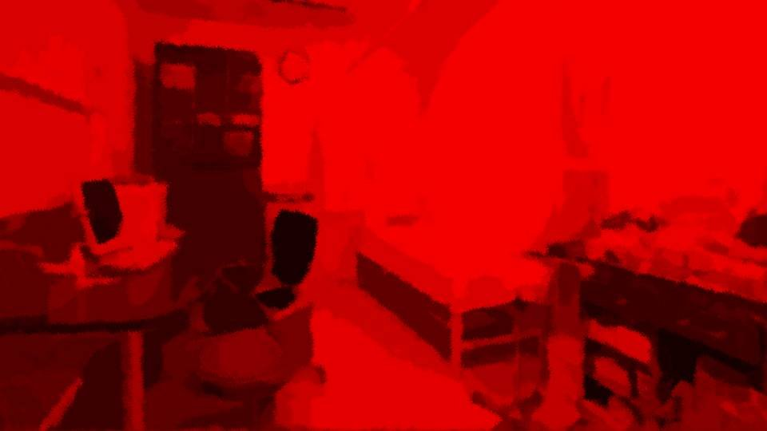
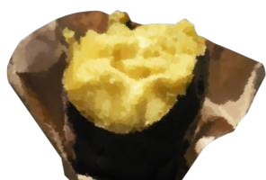
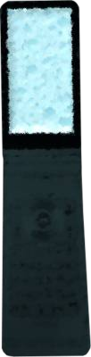

新しい家族たち

「その……こういうことは……
珍しくはないんです」
医者は落ち着いた声で、そう宣告した。
座っているにもかかわらず、私の膝はガクガクと震える。
医者は落ち着いた声で、そう宣告した。
座っているにもかかわらず、私の膝はガクガクと震える。
「うそ……
うそだ……！
お願いします！ もう一度……
もう一度調べてください！」
「いやでも……あらゆる検査をしましたし…… もう、100%間違いないかと……」
私は椅子の上で呆然としてしまった。
私の幸せが音を立てて崩れ始めた。
「いやでも……あらゆる検査をしましたし…… もう、100%間違いないかと……」
私は椅子の上で呆然としてしまった。
私の幸せが音を立てて崩れ始めた。
「あの……こうなった以上は、すぐにでも手術をした方がいいです。
放っておくと母体にも影響が……」
「いや！ 絶対いや！ 私の……私と栄一郎さんの赤ちゃん……！」
私はお腹を押さえて床に座り込んでしまった。
「それと……これも早いところ伝えた方がいいと思うので……。 こんなときに、非情な話だと思うのですが……」
「いや！ 絶対いや！ 私の……私と栄一郎さんの赤ちゃん……！」
私はお腹を押さえて床に座り込んでしまった。
「それと……これも早いところ伝えた方がいいと思うので……。 こんなときに、非情な話だと思うのですが……」

――追い打ちをかけるように告げられたこと。
私はもう、 妊娠できないと……。
栄一郎さんが喜んでくれた、新しい家族も。
茜の子供と友達にさせようって語り合ったあの夢も。
すべてが幻となってしまった。
私の心は奈落の底へ突き落とされた。
私はもう、 妊娠できないと……。
栄一郎さんが喜んでくれた、新しい家族も。
茜の子供と友達にさせようって語り合ったあの夢も。
すべてが幻となってしまった。
私の心は奈落の底へ突き落とされた。
――後日、亡くなった新しい家族をお腹から取りだしてもらった。


「ごめんなさい、栄一郎さん……！」
退院した私は、栄一郎さんの前で膝と頭を床につけ、声のかぎり謝った。
「美冬ちゃん……謝るなんておかしいよ……。 お腹の子は残念だけど、美冬ちゃんが無事でよかったよ……。 僕は美冬ちゃんが無事でいてくれれば、それでいいから……」
栄一郎さんは精一杯の励ましの言葉をかけてくれた。
退院した私は、栄一郎さんの前で膝と頭を床につけ、声のかぎり謝った。
「美冬ちゃん……謝るなんておかしいよ……。 お腹の子は残念だけど、美冬ちゃんが無事でよかったよ……。 僕は美冬ちゃんが無事でいてくれれば、それでいいから……」
栄一郎さんは精一杯の励ましの言葉をかけてくれた。
しかし、
「どうして…… どうしてそんな、のんきなこと言えるの！？ 私が無事だからいい！？ あんなに子供ができたことを一緒に喜んでくれたのに！ あれは嘘だったの！？ そんなの……そんなの！」
「どうして…… どうしてそんな、のんきなこと言えるの！？ 私が無事だからいい！？ あんなに子供ができたことを一緒に喜んでくれたのに！ あれは嘘だったの！？ そんなの……そんなの！」
私は1人、寝室に駆け込んだ。

「やだ……やだよ……！」
私は頭を抱えて床に伏せた。
私はなんて最低な女なんだ。
栄一郎さんだって、私にどう接したらいいか分からなかったはず。
それなのに、あんなひどいことを。
私は頭を抱えて床に伏せた。
私はなんて最低な女なんだ。
栄一郎さんだって、私にどう接したらいいか分からなかったはず。
それなのに、あんなひどいことを。
栄一郎さんにも愛想を尽かされるだろう。
茜も、私と会いづらくなるだろう。
家族……ずっと夢見てた家族が……。
もう……何もかも終わりだ……。
茜も、私と会いづらくなるだろう。
家族……ずっと夢見てた家族が……。
もう……何もかも終わりだ……。
――しばらく1人でベッドにもぐりこんでいた。
以前茜に、私は極端だと言われたことを思い出した。
何もかも終わりと考えたのは、さすがに極端だったかもしれない。
茜の言葉が、ちょっとだけ心を落ち着かせてくれた。
以前茜に、私は極端だと言われたことを思い出した。
何もかも終わりと考えたのは、さすがに極端だったかもしれない。
茜の言葉が、ちょっとだけ心を落ち着かせてくれた。
次に考えたのは、どうやって栄一郎さんに顔を合わせたらいいか。
栄一郎さんは何も悪くない。どう考えても、私が悪い。
栄一郎さんは何も悪くない。どう考えても、私が悪い。
「美冬ちゃん、茜ちゃんが来たよ」
ドア越しに栄一郎さんの声が聞こえる。
「美冬、入るよ？」
私は布団をかぶったまま動かずにいたが、私の返事を待たずに部屋のドアが開けられる。
ドア越しに栄一郎さんの声が聞こえる。
「美冬、入るよ？」
私は布団をかぶったまま動かずにいたが、私の返事を待たずに部屋のドアが開けられる。

部屋には茜だけ入ってきたようだ。
茜はひどい悪阻に悩まされていると聞いた。
よっぽど気力を振り絞って来てくれたのだろう。
茜はひどい悪阻に悩まされていると聞いた。
よっぽど気力を振り絞って来てくれたのだろう。
お腹の子が亡くなったことは、発覚したその日のうちに電話で伝えた。
その時、茜はただ私の話を聞くだけで、あまり言葉を出さなかった。
悪阻がひどいのに来たということは、会ってまで話すべきことが？
その時、茜はただ私の話を聞くだけで、あまり言葉を出さなかった。
悪阻がひどいのに来たということは、会ってまで話すべきことが？
「ねえ、美冬……」
茜は私の背中を布団越しにそっと撫でる。
私は依然としてベッドにもぐり込んだままだった。
「茜……ごめんね。子供たちを友達にさせたかったのに……」
「何言ってるのよ……。今は美冬が立ち直ることが大事よ」
茜は私の背中を布団越しにそっと撫でる。
私は依然としてベッドにもぐり込んだままだった。
「茜……ごめんね。子供たちを友達にさせたかったのに……」
「何言ってるのよ……。今は美冬が立ち直ることが大事よ」
「私……もう赤ちゃん産めないんだって……」
「うん……それも聞いたよ。 それでね……。その…… そのことで、提案があるんだけど……」
そこまで聞いて、私は布団から顔を出した。
「うん……それも聞いたよ。 それでね……。その…… そのことで、提案があるんだけど……」
そこまで聞いて、私は布団から顔を出した。
「良治君とも話したんだけど……
私の子、
養子にしない？」
「え……？」
私はゆっくりと起き上がった。
「え……？」
私はゆっくりと起き上がった。
「茜……変なこと言わないでよ……。そんなこと……」
「私は今の調子なら、2人目も産めるから。 美冬なら、ちゃんと育ててくれるでしょ？」
私が子をもうけるとしたら、代理母を立てるか、養子を迎えるしかないのは事実だ。
しかし……。
「私は今の調子なら、2人目も産めるから。 美冬なら、ちゃんと育ててくれるでしょ？」
私が子をもうけるとしたら、代理母を立てるか、養子を迎えるしかないのは事実だ。
しかし……。
「ごめん、茜……私、急に言われても分からないよ……」
「そっか……じゃあ、考えておいて。 栄一郎さんの意見も聞かないといけないし」
「…………」
「そっか……じゃあ、考えておいて。 栄一郎さんの意見も聞かないといけないし」
「…………」
正直言って、養子でも子供ができるのであれば、家族として迎えたい。
まして茜の子供なら、私は誠心誠意、愛情を持って育てる自信がある。
茜だって子供ができたことをとても喜んでいたのに、この提案をしたのだ。
茜だけでなく、良治さんもよほど私のことを不憫に思ってくれたのだろう。
まして茜の子供なら、私は誠心誠意、愛情を持って育てる自信がある。
茜だって子供ができたことをとても喜んでいたのに、この提案をしたのだ。
茜だけでなく、良治さんもよほど私のことを不憫に思ってくれたのだろう。
でも……それでも……
茜の幸せを横取りするなんて……。
そんなことで幸せになれるわけ……。
そんなことで幸せになれるわけ……。
私もいくぶん落ち着き、茜と一緒に寝室を出た。

居間には栄一郎さんだけでなく、良治さんの姿もあった。
2人の様子を見ると、私たちと同じ話をしていたようだ。
「じゃあ、俺たちは帰るよ。茜の体調もあるし」
「分かった。あとは美冬ちゃんと話して決めるよ」
2人の様子を見ると、私たちと同じ話をしていたようだ。
「じゃあ、俺たちは帰るよ。茜の体調もあるし」
「分かった。あとは美冬ちゃんと話して決めるよ」
栄一郎さんの表情からは、どう考えているのかが読み取れない。
でも私と話して決めるということは、完全にない話にしよう、と言うわけでもないようだ。
「じゃあな。茜、帰るぞ」
でも私と話して決めるということは、完全にない話にしよう、と言うわけでもないようだ。
「じゃあな。茜、帰るぞ」
部屋には栄一郎さんと私だけが残された。
「栄一郎さんごめんなさい。さっきは八つ当たりなんかして……」
「いや、いいんだよ。そうなることなんて、誰にだってあるんだから」
栄一郎さんは相変わらず優しい言葉をかけてくれる。
栄一郎さんといい茜といい、私は本当に周囲に恵まれている。
「いや、いいんだよ。そうなることなんて、誰にだってあるんだから」
栄一郎さんは相変わらず優しい言葉をかけてくれる。
栄一郎さんといい茜といい、私は本当に周囲に恵まれている。
「美冬ちゃんはどう思う？ 茜ちゃんから聞いたでしょ？」
「うぎゅ……」
やっぱりすぐに返事なんてできない。
いや、それはつまり迷っているということだ。
もしみんなが許してくれるなら……なんて期待を持っていることを自覚した。
「うぎゅ……」
やっぱりすぐに返事なんてできない。
いや、それはつまり迷っているということだ。
もしみんなが許してくれるなら……なんて期待を持っていることを自覚した。

「ごめん、疲れてるよね。少し休もうか。
それとも、気晴らしにドライブでも行こうか？」
栄一郎さんはあの手この手で私の心を気遣ってくれる。
でも、その提案にも、すぐに返事できなかった。
栄一郎さんはあの手この手で私の心を気遣ってくれる。
でも、その提案にも、すぐに返事できなかった。
「ほら、行こう！ 今日は僕に付き合って！」
栄一郎さんにしては珍しく、強引に私の手を引いて外に出た。
栄一郎さんにしては珍しく、強引に私の手を引いて外に出た。
外の空気は冷たい。もうすぐ冬本番といったところだろうか。
私たちは車に乗り込んだ。
私たちは車に乗り込んだ。

私たちの間に会話はない。
栄一郎さんは行先も告げずに車を走らせている。
元木町の外へ向かう道路なのは分かるが……。
元木町の外へ向かう道路なのは分かるが……。
――次第に建物は見当たらなくなり、山の中へ入っていった。
「さあ、着いたよ」
元木山の頂上付近にある、砂利で均された一角に車が停まった。
元木山の頂上付近にある、砂利で均された一角に車が停まった。

車を降りると、一層キンと冷えた山の空気が頬を撫でる。

隅の方に焼き芋屋のリヤカーがある。
私は栄一郎さんと一緒に、焼き芋屋の前に立った。
私は栄一郎さんと一緒に、焼き芋屋の前に立った。
「すみません、焼き芋1つ下さい」
「あいよー」
露店には、おばあさんが1人いるだけだ。
大きな窯の蓋を開けると、強烈な熱気が上がる。
「あいよー」
露店には、おばあさんが1人いるだけだ。
大きな窯の蓋を開けると、強烈な熱気が上がる。
焼き芋を受け取り、そばのベンチに座った。
栄一郎さんは見た目の通りよく食べる人なのに、1つしか買わなかった。
栄一郎さんは見た目の通りよく食べる人なのに、1つしか買わなかった。
「はい」

栄一郎さんは焼き芋を半分にして渡してきた。
「あっち！」
冷えた手で持つ焼き芋は、より熱く感じる。
立ちのぼる甘い香りと温かな湯気が、消えていた食欲を呼び戻してくれた。
前歯でそっと、芋にかじりついてみる。
冷えた手で持つ焼き芋は、より熱く感じる。
立ちのぼる甘い香りと温かな湯気が、消えていた食欲を呼び戻してくれた。
前歯でそっと、芋にかじりついてみる。
…………とても温かくて甘い。
この冷たい空気と山の風景が、焼き芋の味を一層引き立ててくれる。
この冷たい空気と山の風景が、焼き芋の味を一層引き立ててくれる。
「なんだか、思い出すなあ……。
美冬ちゃんと初めて会って、中央公園で話した時のこと」
そう言えばあの時も、今日みたいに冬初めの冷たい風が吹いていた。
そう言えばあの時も、今日みたいに冬初めの冷たい風が吹いていた。
あれからもう何年経っただろう。
過ぎてしまえばあっという間。
でも確かなのは、私は栄一郎さんのそばで、ずっと幸せな時間をもらっていたということ。
本当に私にはもったいない人だ。
過ぎてしまえばあっという間。
でも確かなのは、私は栄一郎さんのそばで、ずっと幸せな時間をもらっていたということ。
本当に私にはもったいない人だ。
「美冬ちゃん。僕は養子を迎えてもいいと思うよ」
「え……？」
栄一郎さんは芋を口にする前にそう言った。
「美冬ちゃんはここまで甘えるなんてダメって思ってるよね？」
「うん……茜はいつも、困ったら何でも助けてあげるからって言ってくれるの。 でも……こればっかりは……」
「え……？」
栄一郎さんは芋を口にする前にそう言った。
「美冬ちゃんはここまで甘えるなんてダメって思ってるよね？」
「うん……茜はいつも、困ったら何でも助けてあげるからって言ってくれるの。 でも……こればっかりは……」
「茜ちゃんはもっと先を見てるんじゃないかな。
大事な子供を僕たちに預けて、そして2人目を産んで……。
そしたら、血のつながった子供を美冬ちゃんと一緒に育てていけるって。
そうなったら、茜ちゃんと美冬ちゃんは、もっと強い 絆 で結ばれるんじゃないかって」
「うぎゅ……でも……それでも私……」
「うぎゅ……でも……それでも私……」
「ううん、それだけじゃないさ。
もし養子を迎えなかったら、この先はどうだろう。
茜ちゃんは子供を抱えて美冬ちゃんに会うなんて、きっとできないよ」
「それは……そうかもしれないけど」
私の前に子供を連れてくるなんて、茜はしたくないだろう。
私も気にしないつもりでも、もしかしたら妬むようになるのかもしれない。
「それは……そうかもしれないけど」
私の前に子供を連れてくるなんて、茜はしたくないだろう。
私も気にしないつもりでも、もしかしたら妬むようになるのかもしれない。
「僕はね、美冬ちゃんのためだけじゃなく、茜ちゃんのためにも、養子を迎えた方がいいと思うんだ。
美冬ちゃんだって、茜ちゃんと今まで通り仲良くしたいでしょ？」
そして栄一郎さんは初めて焼き芋を口にした。
「あちちち！」
栄一郎さんは小さな悲鳴を上げながら、焼き芋をかみしめている。
私は自分の焼き芋に目を落とす。
冷えた空気のせいか、少し湯気がなくなってきている。
私ももう一口、焼き芋をかじった。
するとまた、焼き芋からは温かな湯気と甘い香りが立ち上った。
栄一郎さんは小さな悲鳴を上げながら、焼き芋をかみしめている。
私は自分の焼き芋に目を落とす。
冷えた空気のせいか、少し湯気がなくなってきている。
私ももう一口、焼き芋をかじった。
するとまた、焼き芋からは温かな湯気と甘い香りが立ち上った。
「おいしいね、この焼き芋」
「そうでしょ？ 実はここ、知る人ぞ知る名店なんだってさ。 いつか美冬ちゃんと来たいと思ってたんだ」
栄一郎さんは、今度は大きな口でがぶりと焼き芋をかじった。
「そうでしょ？ 実はここ、知る人ぞ知る名店なんだってさ。 いつか美冬ちゃんと来たいと思ってたんだ」
栄一郎さんは、今度は大きな口でがぶりと焼き芋をかじった。
「おごごごご！ あぢぢぢ！」
「ちょっと！ それじゃやけどするよ！？」
あんなにたくさん1度に口に入れたら、熱いに決まっている。
栄一郎さんがはふはふと口を動かす度に、口から湯気が吐かれた。
「ちょっと！ それじゃやけどするよ！？」
あんなにたくさん1度に口に入れたら、熱いに決まっている。
栄一郎さんがはふはふと口を動かす度に、口から湯気が吐かれた。
「はあ！ おいしいなあ！」
栄一郎さんはまんまるの顔をほころばせる。
そんな栄一郎さんの横顔を見て、久しぶりに私も笑顔になれた。
栄一郎さんはまんまるの顔をほころばせる。
そんな栄一郎さんの横顔を見て、久しぶりに私も笑顔になれた。
「おばちゃん！ 焼き芋もう1つ下さい！」
「だーれがおばちゃんだってー？」
「だーれがおばちゃんだってー？」
「あーいやいや、お姉さん！ この焼き芋、おいしいですよ！ 僕の妻も喜んでます！
ね、美冬ちゃん！」
「は、はい！ とてもおいしいです！」
「は、はい！ とてもおいしいです！」
「そうだろ、そうだろう。うちの畑で作った芋だよ。
まあ、畑は大家さんから借りてるけどね。
それでも、丹精込めて作った芋を喜んでもらえると嬉しいよ」
借りた畑で育てた芋か……。
それでもおいしいことには変わりない。
丹精込めて育てたのだから、きっとここまでおいしいのだ。
それでもおいしいことには変わりない。
丹精込めて育てたのだから、きっとここまでおいしいのだ。
「栄一郎さん……私……」
「すぐに返事しなくていいよ。考える時間はまだあるんだからさ。
このことは、何度も話し合って決めようよ。
あ、お姉さん、もう1つ下さい！」
「もう栄一郎さん、それじゃあ晩御飯食べられないわよ？」
「大丈夫大丈夫！ 美冬ちゃんの手料理はおいしいから、いつでも食べられるよ！」
「もう栄一郎さん、それじゃあ晩御飯食べられないわよ？」
「大丈夫大丈夫！ 美冬ちゃんの手料理はおいしいから、いつでも食べられるよ！」
「あつあつな夫婦だねえ……。芋が焦げちゃうじゃないか」
「ええ、栄一郎さんは世界一の旦那様です！」
「ええ、栄一郎さんは世界一の旦那様です！」
「美冬ちゃんだって、世界一の奥さんだよ！」
「ほれほれ、これ持って帰んな！ もう見てる方が恥ずかしいよ」
おばあさんは焼き芋を5つもくれた。
「ほれほれ、これ持って帰んな！ もう見てる方が恥ずかしいよ」
おばあさんは焼き芋を5つもくれた。
「栄一郎さん、私、茜に連絡してみる。
本当に養子に出してもいいのかどうか、もっとよく考えてみてって。
何度も話して、それで納得できる答えを出そうと思う」
「そうするといいよ。お互いのために、こういうことはじっくりと考えないとね」
「そうするといいよ。お互いのために、こういうことはじっくりと考えないとね」

「もしもし美冬？ ちょっとは元気になった？」
「うん……栄一郎さんと焼き芋食べに行ってたよ」
「ブフッ！ 栄一郎さんらしいなあ！ あ、そうそう。私の子供、来年の4月に生まれるでしょ？ その子は新村家に迎えてもらって、うまく年子の2人目ができたら、私と美冬の子、1歳違いだけど、友達になれるんじゃなかな？」
「うん……栄一郎さんと焼き芋食べに行ってたよ」
「ブフッ！ 栄一郎さんらしいなあ！ あ、そうそう。私の子供、来年の4月に生まれるでしょ？ その子は新村家に迎えてもらって、うまく年子の2人目ができたら、私と美冬の子、1歳違いだけど、友達になれるんじゃなかな？」
「ちょっと茜、気が早いよ……。まだ決められないのに……」
「あんたねえ……。 ほんっっっっっっっとうに、いつまで経ってもそのうじうじ、治らないのね！ あんたは今、自分が1番幸せになれることだけを考えなさい！ 私は、私が1番幸せになれる方法を良治君と考えたの！」
「あんたねえ……。 ほんっっっっっっっとうに、いつまで経ってもそのうじうじ、治らないのね！ あんたは今、自分が1番幸せになれることだけを考えなさい！ 私は、私が1番幸せになれる方法を良治君と考えたの！」
「そう言ってくれるのはありがたいけどさ。
急ぐ必要はないんだし、もっと時間をかけて考えようよ。
何度も話してお互いに納得できるようにさ」
「うーん……まあ、それもそうね。 でも、あんたのことだからいざって時にまた決められないんじゃない？」
「うぎゅ……」
「うーん……まあ、それもそうね。 でも、あんたのことだからいざって時にまた決められないんじゃない？」
「うぎゅ……」
「またその『うぎゅ……』か……。
今度その口癖言ったら、2人目も押し付けるわよ！？」
「ちょ、ちょっと茜……！」
「あははは！ まあそれは冗談。 とりあえず、美冬のためだけじゃなく、私のためにもああいう提案したんだから、すぐにダメなんて言わないでよ！ ちゃ・ ん・ と、 ご検討ください！ 以上！」
「ちょ、ちょっと茜……！」
「あははは！ まあそれは冗談。 とりあえず、美冬のためだけじゃなく、私のためにもああいう提案したんだから、すぐにダメなんて言わないでよ！ ちゃ・ ん・ と、 ご検討ください！ 以上！」
「ははは……茜ちゃんの声、大きかったね」
「栄一郎さん…… 私、やっぱりまだ、幸せをあきらめたくない……！」
「栄一郎さん…… 私、やっぱりまだ、幸せをあきらめたくない……！」

――翌年の春、私たち夫婦立会いのもと、元気な女の子が生まれた。
私たちの養子となったその子は、春花と名づけられた。
さらにその翌年の夏、茜はもう1人女の子を産んだ。
その子はなつみと名づけられた。
私たちの養子となったその子は、春花と名づけられた。
さらにその翌年の夏、茜はもう1人女の子を産んだ。
その子はなつみと名づけられた。
春花となつみちゃんは、血を分けた年子の姉妹だ。
しかし2人が成人するまで、このことは本人たちには言わないことにした。
しかし2人が成人するまで、このことは本人たちには言わないことにした。
私は、春花を本当の娘のように思っていた。
春花は茜と私の大事な娘。
春花はなつみちゃんと一緒にすくすくと元気に育っていった。
春花は茜と私の大事な娘。
春花はなつみちゃんと一緒にすくすくと元気に育っていった。
Read ✓ Next in this arc →